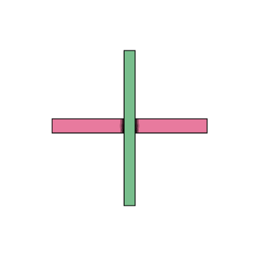

OpenStrandStudio · OpenStrandJS · render fidelity
Fidelity dashboards
Each card is one run of the pixel-fidelity harness — the JS/Paper.js renderer checked
against the real OpenStrandStudio Qt oracle. The main card tracks the latest merged
state; every open pull request gets its own preview. Use the ‹ › arrows (or the dots) to flip a card
through its examples, then open it for the full OSS · JS · diff breakdown.
 100%
100%
Make the Image button export the current view like OSS save_canvas_as_image
3/3 pixel-perfect · lowest 100% · 4e5532861d
 100%
100%
Hover and hit-test the exact OSS selection footprint in select and mask mode
3/3 pixel-perfect · lowest 100% · 2dd3d0e8c9
 100%
100%
Style the layer right-click menu to match OpenStrandStudio pixel for pixel
3/3 pixel-perfect · lowest 100% · 682e464a49
 100%
100%
Press the group column's buttons in the Create Group pressed color; chevron 20% smaller
3/3 pixel-perfect · lowest 100% · 44a9788450
 100%
100%
Collapse the group column to a 40 px icon rail (port of OSS #18 and #19)
3/3 pixel-perfect · lowest 100% · cd547d47e2
 100%
100%
Tab edge: match the OSS floating tab bar's look and behaviour
3/3 pixel-perfect · lowest 100% · 7491e29c62
 100%
100%
Fit the toolbar on narrow windows: OSS compact layer panel + natural-width buttons
3/3 pixel-perfect · lowest 100% · f3ded2f460
 100%
100%
Announce the undo/redo history feature in the 1.110 release notes
3/3 pixel-perfect · lowest 100% · 9b1299802f
 100%
100%
Make the home button reset history, as OSS does
3/3 pixel-perfect · lowest 100% · 0183948690
 100%
100%
Match the group column to the running Qt app: button fill, insets, 9px window margin
3/3 pixel-perfect · lowest 100% · f788051541
 100%
100%
Match the group panel's button and rows to what OSS actually paints
3/3 pixel-perfect · lowest 100% · 4e3ee7d744
 100%
100%
Paint a strand body the way Qt does, not with a boolean union
3/3 pixel-perfect · lowest 100% · fdf0250ee5

100%Make the zoom buttons actually zoom
3/3 pixel-perfect · lowest 100% · c6899f4ce7
 100%
100%
End colour-strip drags on pointercancel too
3/3 pixel-perfect · lowest 100% · ff67d1f93e
 100%
100%
Tier 5: the shadow editor's bulk toggles and Shadow Path preview
3/3 pixel-perfect · lowest 100% · c1d9ee4fd4
 100%
100%
Tier 4: arrow and extension menus, colour-action scopes, and the i18n catch-up
3/3 pixel-perfect · lowest 100% · 86dbccb8c6